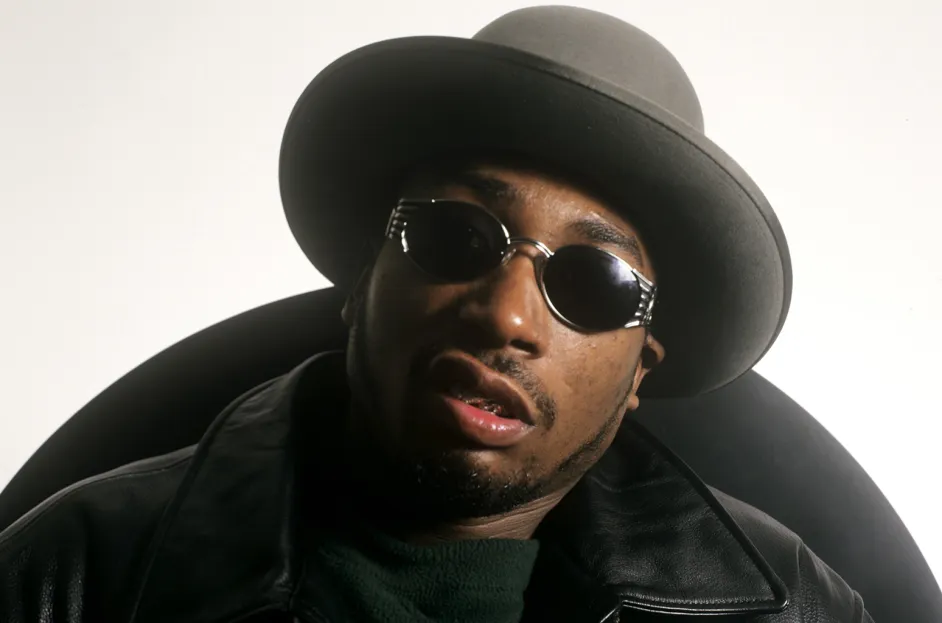

Russell Jones, or Ol’ Dirty Bastard (ODB), was another founding member of Wu-Tang. His unique rap style was marked by chaotic and profane rhymes, cementing his place as a fan favorite among members of Wu-Tang. Though influential on Wu-Tang projects, ODB struggled with drug abuse and incarceration. In 2000, he escaped from a court-ordered drug treatment facility and spent a month as a fugitive, still appearing onstage for performances and promoting Wu-Tang’s third album, The W.
On November 13, 2004, Jones collapsed in RZA’s recording studio and died at the scene. This was the result of a sharp decline in his mental and physical health, leading to abuse of cocaine and opioids. He still remains a legend in hip-hop.